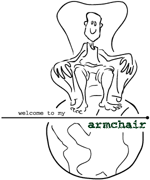

|
shit some more!
i had a mailbox corruption today (scourge of the middle-nineties) and i guess i lost that message from jeff. well, i still have the original message, a terse "madison, wi", but i lost the second correspondence i received from him. the gist of it is, he's a computer science guy from decorah, iowa (which happens to be the hometown of my co-worker, a fellow named hilary nelson). jeff happened upon my page while looking for resources on the programming language which shares my name... i love that you can just type 'pascal' into netscape and you end up here. any way, that's his scoop. as an award for the contest, i promised the winner the food item of his or her choice. jeff declined, saying that i should have a can of spam on his behalf, or something to that extent. well, needless to say, it didn't take long for me to find a decent picture of a can of spam on the net, considering how many spam churches and shrines and spamcams there are out there... so here ya go, jeff. enjoy! i hate the stuff.
|